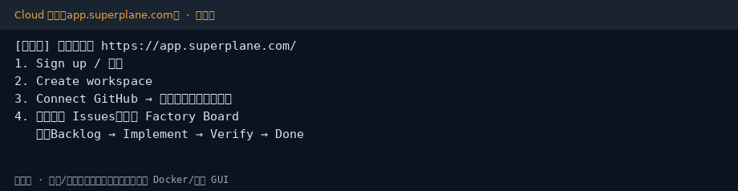
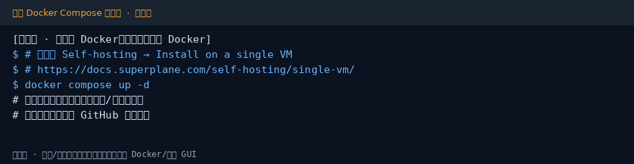
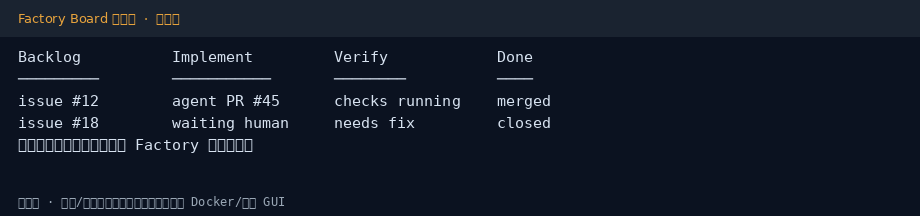

SuperPlane 小白中文教程
社区非官方导读 · 上游 superplanehq/superplane · 文档
完整图文教程在 GitHub README：
两条路
# Cloud（推荐先试） # https://app.superplane.com/ # 单机自托管（需 Docker）摘要见官方： # https://docs.superplane.com/self-hosting/single-vm/
截图


